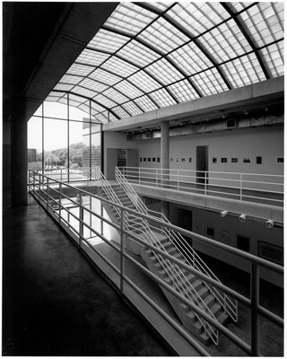

Main Address 1001 Bissonnet, Houston, Texas 77005

The MFAH: An Architectural History
About the MFAH
Established in 1900, the MFAH is the largest cultural institution in the southwest region. The Museum’s main campus is located in the heart of Houston’s Museum District, and comprises the Audrey Jones Beck Building, the Caroline Wiess Law Building, the Glassell School of Art, and the Lillie and Hugh Roy Cullen Sculpture Garden. Nearby, two remarkable house museums—Bayou Bend Collection and Gardens, and Rienzi—present collections of American and European decorative arts. Resources that can be found throughout the MFAH include a repertory cinema, two significant research libraries, public archives, and a conservation and storage facility. The encyclopedic collections of the MFAH cover world cultures dating from antiquity to the present and include in-depth holdings of American art, European paintings, pre-Columbian and African gold, decorative arts and design, photography, prints and drawings, Modern and Contemporary painting and sculpture, and Latin American art. The MFAH is also home to the International Center for the Arts of the Americas (ICAA), a leading research institute for 20th-century Latin American and Latino art.
Upcoming Events

Films
Lo and Behold: Reveries of the Connected World
Saturday 9:03 @ 7 p.m.

Programs and Activities
Sunday Garden Photography at Rienzi
Sunday 9.04 @ 1 p.m.

Programs and Activities
Sunday Family Zone
Sunday 9.04 @ 1 p.m.
Architectural Legacy
The MFAH campus unites the brilliant architectural and design work of Ludwig Mies van der Rohe, Isamu Noguchi, and Rafael Moneo, part of a 75-year legacy of inspired commissions that spans from 1924—and the construction of the original Museum building designed by William Ward Watkin in the Neoclassical style—to the year 2000, when the Museum completed the Rafael Moneo-designed Audrey Jones Beck Building.
The Future fo the MFAH Campus
The firm Steven Holl Architects is developing plans for a comprehensive project to create a new building for 20th- and 21st-century art and a new facility for the Glassell School of Art; those structures will link to the existing gallery buildings by Ludwig Mies van der Rohe and Rafael Moneo, as well as the sculpture garden by Isamu Noguchi, establishing a 14-acre public campus in the heart of Houston’s Museum District.
Learn more about the future campus.
Alfred C. Glassell School of Art

Architect: Eugene Aubry of S. I. Morris and Associates
Director: William C. Agee
Year: 1979
By the mid-1970s, the Museum needed a new facility for its school of art to accommodate the growing student body. Under the guidance of Museum director William C. Agee, and with a generous donation from Alfred Glassell, Jr., a plan for an approximately 42,000-square-foot building was drawn up by architects Eugene Aubry and R. Nolen Willis of the prominent Houston firm S. I. Morris and Associates. The building—a two-story space made from concrete and glass-block, and located one block north of the Museum—represented the first time that the school had a home of its own in its 52-year history. The Glassell School of Art opened to the public on January 13, 1979.